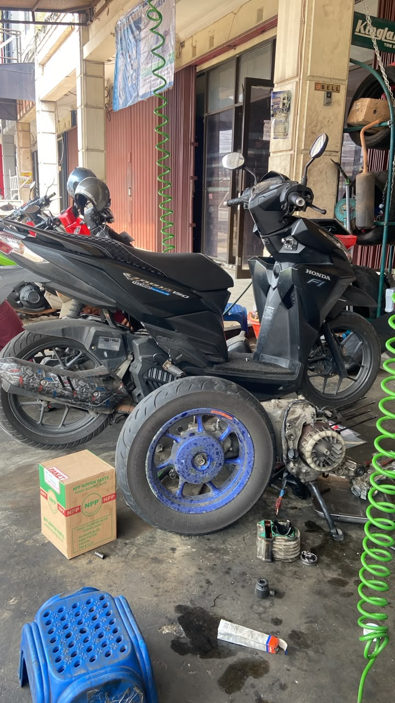
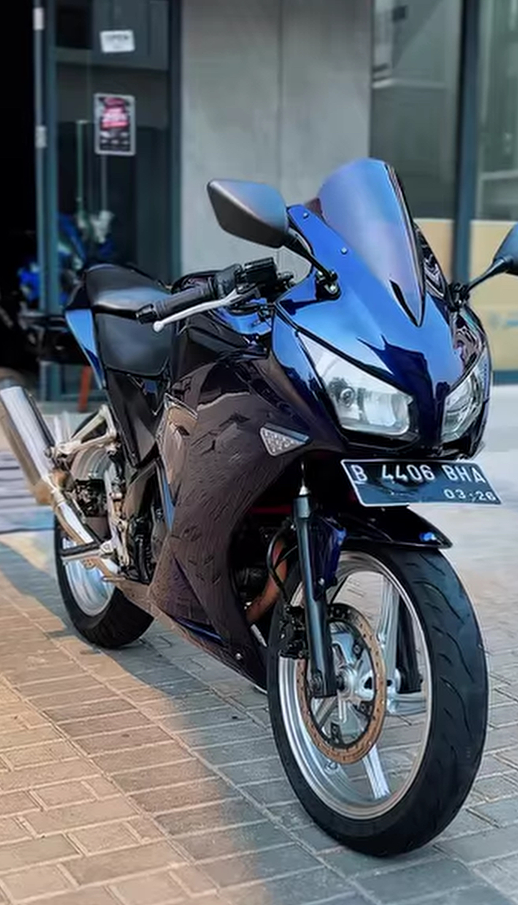
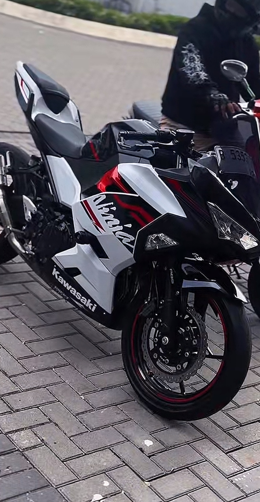
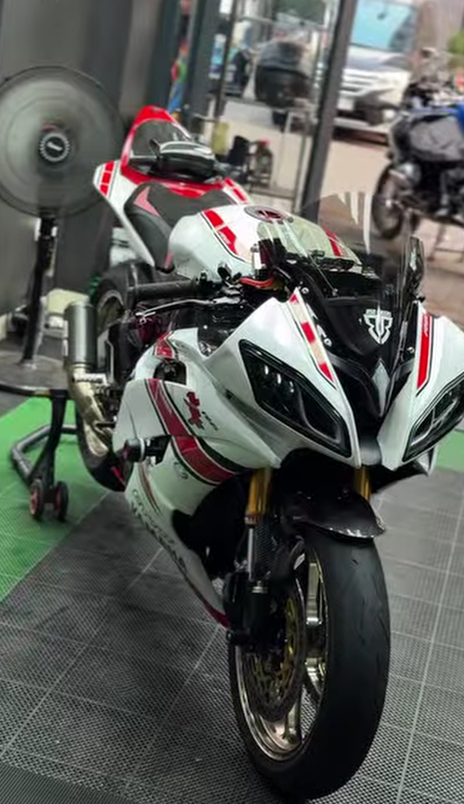
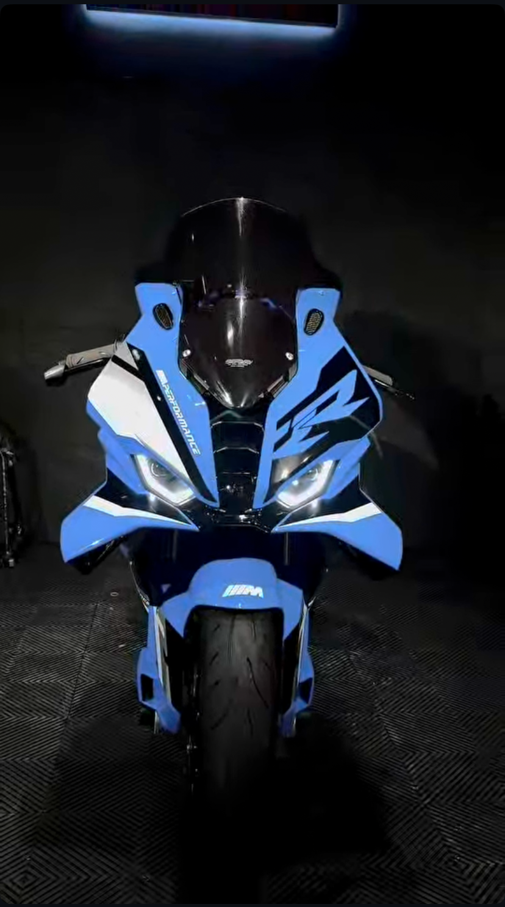

Galeri
Halaman ini berisi dokumentasi hasil pekerjaan kami dan testimoni dari para pelanggan Ladhis Jaya Motor.

Honda Vario
Servis rutin dan ganti oli, mesin jadi halus kembali.

Honda CBR150R
Cuci bersih total dan detailing body sport.

Kawasaki Ninja 250 new
Cuci motor premium.

Yamaha R6
Perbaikan kelistrikan, polish dan detailing body .

BMW M1000RR
Cuci bersih total, polish dan detailing body sport.
Testimoni Pelanggan
Motor saya jadi bersih banget, kayak baru. Pengerjaannya juga cepat.
Miko
Mekaniknya ramah dan jelas menjelaskan kerusakan serta biayanya.
Depri Anto
Harga terjangkau, hasil servis memuaskan.
HamtaroID
Setelah servis kelistrikan, langsung normal lagi.
Andreas Andrew
Hasil polish nya kinclong, JOS JIS.
Raffasha Artha
Mengapa Pelanggan Memilih Kami?
- Hasil bersih maksimal
- Pelayanan ramah
- Harga terjangkau
- Pengerjaan cepat
- Peralatan modern